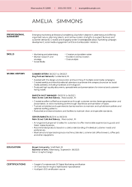

Welcome to the Government Hiring Guide Website, your ultimate resource for navigating the complex world of government job opportunities.
About
This is website is to guide you when applying for government positions, it's important to understand the specific requirements related to security background/clearance, the types of government resumes, and the various government agencies involved. Here's a guide to help you navigate the government hiring process:
-
Security Background/Clearance
A security background clearance is a process to determine an individual's eligibility for access to classified information. The level of clearance required for a government position depends on the nature of the work and the sensitivity of the information involved. Clearances are granted by various government agencies, such as the Department of Defense (DoD), the Department of Homeland Security (DHS), and the Central Intelligence Agency (CIA). A background investigation typically involves a review of an individual's criminal record, employment history, financial history, and personal references.
-

Types of Government Resumes
The types of government resumes vary based on the specific requirements of the position and the agency. Some common types of government resumes include chronological resumes, functional resumes, combination resumes, federal resumes, military transition resumes, academic or research resumes, and internship or entry-level resumes. It's important to follow the specific guidelines provided by the agency to which you are applying and tailor your resume to highlight relevant skills and experiences.
-
Government Agencies
The government agencies involved in the hiring process for government positions can vary depending on the nature of the work. Some of the agencies involved in the hiring process include the Office of Personnel Management (OPM), the Department of Defense (DoD), the Department of Homeland Security (DHS), the Central Intelligence Agency (CIA), the Federal Bureau of Investigation (FBI), and the National Security Agency (NSA). Each agency has its own specific requirements and guidelines for hiring, and it's important to research and follow these guidelines when applying for government positions.
Security Background/Clearance
When it comes to government hiring, there are several types of security clearances that applicants may be required to obtain,
depending on the nature of the job and the level of access to sensitive information or facilities.
The most common security clearances are:
Confidential Clearance
Secret Clearance
Top Secret Clearance

Image description goes here.
Government Agencies
Government agencies can vary based on the specific country and its organizational structure.
However, I can provide you with a general overview of the types of government agencies that commonly exist.
Executive Agencies
These agencies are responsible for implementing and enforcing laws and regulations within a specific area of focus. They operate under the executive branch of the government and are often headed by a director or administrator appointed by the executive authority
Legislative Agencies
Legislative agencies support the work of the legislative branch of the government, such as the parliament or congress. They provide research, analysis, and policy recommendations to lawmakers. Examples include budget offices, legislative research agencies, and parliamentary services.
Judicial Agencies
Judicial agencies support the functioning of the judicial branch of the government. They provide administrative and logistical support to courts, judges, and other legal entities. These agencies may include court administrators, judicial councils, and agencies responsible for court technology and record management.
Independent Agencies
Independent agencies operate autonomously and are not directly controlled by any specific branch of the government. They often have a specific mandate or focus and operate with a certain degree of independence. Examples include commissions, boards, and authorities responsible for overseeing specific areas like human rights, consumer protection, or electoral processes..
Public Service Agencies
Public service agencies provide essential services and functions to the public, such as healthcare, education, transportation, and social services. These agencies may include departments of health, education ministries, transportation authorities, and social welfare agencies.
Defense and Security Agencies
Defense and security agencies are responsible for national defense, military operations, intelligence, and public safety. These agencies include defense ministries, military branches, intelligence agencies, and law enforcement bodies.
Each type of government agency has its own unique functions, roles, and organizational structures.
It's important to research and understand the specific agencies within your country's government system when applying for government positions, as it can help you align your skills and qualifications with the agency's needs.
Government Resumes
Government resumes can vary based on the specific requirements of the hiring agency or department.
However, here are some common types of government resumes
Chronological Resume
Functional Resume
Combination Resume
Remember to review the specific guidelines provided by the government agency or department to which you are applying.
Tailor your resume accordingly to highlight the most relevant information and present it in a clear and concise manner.
Image description goes here.